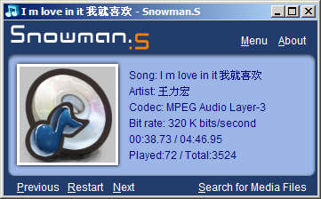

#import "Leask.h"
Snowman.S 界面截图
7/31/2005 5:16:17 PM
由于 Snowman.S 的智能方式使得其用户操作的次数很少，界面十分简洁。
Snowman.S 还包括随机颜色界面，在后续版本中会发展成根据用户的喜好，用户的性格，智能生成界面。
其功能强大在于其内核体贴用户的设计。
正如：
PHILIPS 说，科技就像打开盒子那样简单。
xiaoxiao 说，是技术含量带来的简洁。

Comments
- 8/1/2005 4:16:30 AM
itunes也不错
- 8/1/2005 2:53:24 PM
good job~~~


- 8/1/2005 4:16:30 AM
itunes也不错